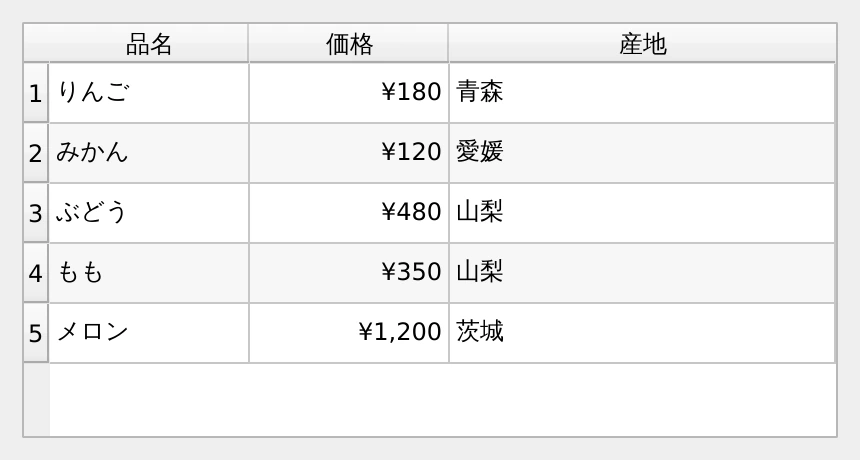
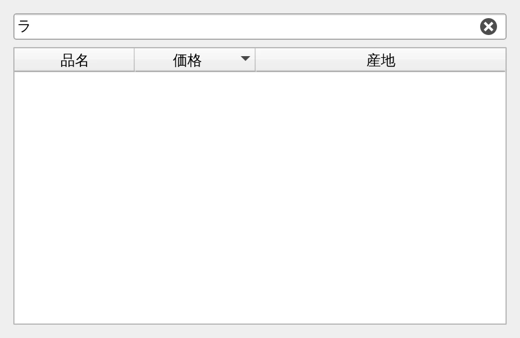

第 10 章·読了目安 16 分
第10章 モデル / ビュー — 表やリストを扱う
Qt 入門者が最初にぶつかる壁。「データ」と「見せ方」を分けるという考え方さえ掴めれば、実は素直な仕組みです。
第 5 章で QListWidget を紹介しました。項目を addItems() で足すだけの、簡単なものです。
実はあれは「初心者向けの入口」で、Qt の本命は別にあります。
それがモデル / ビューです。 Qt 入門者が最初にぶつかる壁として有名ですが、 考え方さえ掴めば、実際にはとても素直な仕組みです。
なぜ分けるのか
QListWidget は、データそのものをウィジェットの中に抱え込みます。
項目が 100 個くらいなら問題ありませんが、10 万件だとどうでしょうか。
画面に映るのはせいぜい 30 行なのに、10 万個のオブジェクトを作ることになります。
モデル / ビューは、この関係を分けます。
- モデル＝データの持ち主。「何行ある？」「その升目は何？」に答える係
- ビュー＝表示する係。画面に見えている範囲だけモデルに問い合わせる
だから 10 万件でも一瞬で開きます。 そして同じモデルを、表としてもリストとしても同時に表示できます。
覚えることは 4 つのメソッドだけ
表を作るなら QAbstractTableModel を継承して、次の 4 つを書きます。
| メソッド | 聞かれていること | 返すもの |
|---|---|---|
rowCount() | 行はいくつ？ | int |
columnCount() | 列はいくつ？ | int |
data(index, role) | その升目の「◯◯」は？ | 文字列・色・数値など |
headerData(...) | 見出しは？ | 文字列 |
"""モデル / ビュー — QTableView に自作モデルをつなぐ。覚えることは 4 つだけ。 rowCount() 行はいくつ？ columnCount() 列はいくつ？ data() その升目に何を表示する？ headerData() 見出しに何を表示する？実行: python ch10_tableview.py"""import sysfrom PySide6.QtCore import QAbstractTableModel, QModelIndex, Qtfrom PySide6.QtWidgets import QApplication, QTableView, QVBoxLayout, QWidget# 表示したいデータ。ただの Python のリスト。FRUITS = [ ["りんご", 180, "青森"], ["みかん", 120, "愛媛"], ["ぶどう", 480, "山梨"], ["もも", 350, "山梨"], ["メロン", 1200, "茨城"],]HEADERS = ["品名", "価格", "産地"]class FruitModel(QAbstractTableModel): """リストのリストを、表として見せるための「通訳」。""" def __init__(self, rows): super().__init__() self._rows = rows def rowCount(self, parent=QModelIndex()) -> int: return len(self._rows) def columnCount(self, parent=QModelIndex()) -> int: return len(HEADERS) def data(self, index: QModelIndex, role=Qt.ItemDataRole.DisplayRole): if not index.isValid(): return None value = self._rows[index.row()][index.column()] # role は「何を聞かれているか」。表示文字列かもしれないし、色かもしれない。 if role == Qt.ItemDataRole.DisplayRole: return f"¥{value:,}" if index.column() == 1 else str(value) # 価格の列だけ右揃えにする。 if role == Qt.ItemDataRole.TextAlignmentRole and index.column() == 1: return Qt.AlignmentFlag.AlignRight | Qt.AlignmentFlag.AlignVCenter return None def headerData(self, section: int, orientation: Qt.Orientation, role=Qt.ItemDataRole.DisplayRole): if role != Qt.ItemDataRole.DisplayRole: return None if orientation == Qt.Orientation.Horizontal: return HEADERS[section] return section + 1 # 行番号# このファイルは次のサンプル (ch10_filter.py) から import して再利用する。# import されたときにアプリまで起動してしまわないよう、# 「直接実行されたときだけ動かす」お決まりの書き方で囲っておく。if __name__ == "__main__": app = QApplication(sys.argv) window = QWidget() window.setWindowTitle("QTableView + 自作モデル") window.resize(430, 230) view = QTableView() view.setModel(FruitModel(FRUITS)) # ★ ここでデータと見た目がつながる view.horizontalHeader().setStretchLastSection(True) view.setAlternatingRowColors(True) layout = QVBoxLayout(window) layout.addWidget(view) window.show() sys.exit(app.exec())
QModelIndex — 升目の住所
data() に渡ってくる index は、「どの升目のことを聞いているか」を表す住所です。
使うのは 2 つだけです。
index.row() # 何行目か（0 から）index.column() # 何列目か（0 から）role — 「何を聞かれているか」
ここが最初の関門です。
ビューは同じ升目について、何度も違う質問をしてきます。
その質問の種類が role です。
| role | 質問の内容 | 返すもの |
|---|---|---|
DisplayRole | 表示する文字は？ | 文字列 |
TextAlignmentRole | 寄せ方は？ | Qt.AlignmentFlag |
ForegroundRole | 文字の色は？ | QBrush / QColor |
BackgroundRole | 背景の色は？ | QBrush / QColor |
CheckStateRole | チェックの状態は？ | Qt.CheckState |
ToolTipRole | ツールチップは？ | 文字列 |
EditRole | 編集時に入れる値は？ | 生の値 |
data() は関係のない role には必ず None を返す必要があります。
role を見ずに常に文字列を返してしまうと、
「背景色は？」と聞かれたのに文字列を返すことになり、表示が崩れます。
def data(self, index, role=Qt.ItemDataRole.DisplayRole): if role == Qt.ItemDataRole.DisplayRole: return str(self._rows[index.row()][index.column()]) return None # ★ これを忘れないint(...) は、いまは不要
揃え方を返すところで int(...) で包んでいる記事をよく見かけます。
return int(Qt.AlignmentFlag.AlignRight | Qt.AlignmentFlag.AlignVCenter) # 昔の書き方return Qt.AlignmentFlag.AlignRight | Qt.AlignmentFlag.AlignVCenter # そのままでよい初期の PySide6 では列挙型の扱いが安定していなかった名残です。 このページのバージョンで確認したところ、 どちらで返しても表示結果は同じでした。 新しく書くなら、包まないほうが素直です。
編集できるようにする
表示だけなら上の 4 つで足ります。ユーザーに編集させるには、あと 2 つ足します。
| メソッド | 役割 |
|---|---|
flags(index) | その升目に「何ができるか」を宣言する（選択可・編集可・チェック可） |
setData(index, value, role) | ユーザーの操作結果を受け取る。成功したら True を返す |
def flags(self, index): return (Qt.ItemFlag.ItemIsEnabled | Qt.ItemFlag.ItemIsSelectable | Qt.ItemFlag.ItemIsEditable)def setData(self, index, value, role=Qt.ItemDataRole.EditRole): if role != Qt.ItemDataRole.EditRole: return False self._rows[index.row()][index.column()] = value self.dataChanged.emit(index, index, [role]) # ★ 忘れると画面が更新されない return Trueモデルの中身を書き換えただけでは、ビューは気づきません。 ビューは「変わったよ」というシグナルを聞いて、初めて描き直します。
| やること | 使うもの |
|---|---|
| 既存の升目の値が変わった | dataChanged.emit(左上, 右下, [role]) |
| 行を追加する | beginInsertRows() … endInsertRows() で挟む |
| 行を削除する | beginRemoveRows() … endRemoveRows() で挟む |
| 全部作り直す | beginResetModel() … endResetModel() で挟む |
挟むのを忘れると、行数の食い違いでビューがクラッシュすることがあります。 面倒に見えますが、これは「ビューに整合性を保たせるため」の約束です。
並べ替えと絞り込み — QSortFilterProxyModel
「検索欄に打った文字で一覧を絞り込みたい」。 自分でフィルタ済みのリストを作り直す必要はありません。 モデルとビューの間に 1 枚はさむだけです。
"""QSortFilterProxyModel — 元データを触らずに、並べ替えと絞り込みをする。 元モデル → プロキシ → ビューと、あいだに 1 枚はさむだけ。元モデルには一切手を入れない。実行: python ch10_filter.py"""import sysfrom PySide6.QtCore import QSortFilterProxyModel, Qtfrom PySide6.QtWidgets import (QApplication, QLineEdit, QTableView, QVBoxLayout, QWidget)from ch10_tableview import FRUITS, FruitModelapp = QApplication(sys.argv)window = QWidget()window.setWindowTitle("並べ替えと絞り込み")window.resize(430, 280)source = FruitModel(FRUITS)proxy = QSortFilterProxyModel()proxy.setSourceModel(source) # ① 元モデルを包むproxy.setFilterKeyColumn(-1) # ② -1 = すべての列を検索対象にproxy.setFilterCaseSensitivity(Qt.CaseSensitivity.CaseInsensitive)view = QTableView()view.setModel(proxy) # ③ ビューにはプロキシを渡すview.setSortingEnabled(True) # 見出しクリックで並べ替えview.sortByColumn(1, Qt.SortOrder.AscendingOrder)view.horizontalHeader().setStretchLastSection(True)view.setAlternatingRowColors(True)search = QLineEdit()search.setObjectName("filterEdit")search.setPlaceholderText("絞り込み（品名・産地で検索）")search.setClearButtonEnabled(True)# 入力のたびにフィルタを更新する。search.textChanged.connect(proxy.setFilterFixedString)layout = QVBoxLayout(window)layout.addWidget(search)layout.addWidget(view)window.show()sys.exit(app.exec())
proxy = QSortFilterProxyModel()proxy.setSourceModel(source) # 元モデルを包むproxy.setFilterKeyColumn(-1) # -1 = すべての列を検索対象にview.setModel(proxy) # ビューにはプロキシを渡すsearch.textChanged.connect(proxy.setFilterFixedString)view.setSortingEnabled(True) # 見出しクリックで並べ替えビューが「3 行目が選ばれた」と言ってきても、それは絞り込み後の 3 行目です。 元のデータの何番目かを知るには、変換が必要です。
source_index = proxy.mapToSource(proxy_index)row = source_index.row() # これが元データでの行番号どのビューを使うか
| ビュー | 見た目 | 合うモデル |
|---|---|---|
QListView | 1 列のリスト | QAbstractListModel |
QTableView | 行と列の表 | QAbstractTableModel |
QTreeView | 階層のあるツリー | QAbstractItemModel |
項目が数十個で、内容も固定なら QListWidget で十分です。無理にモデルを書く必要はありません。
件数が多い・データが別の場所（DB や API）にある・同じデータを複数の見せ方で出したい
のいずれかに当てはまったら、モデル / ビューに移ってください。
ch10_tableview.pyのdata()にForegroundRoleの処理を足し、価格が 500 円以上の行を赤字にする（ヒント:from PySide6.QtGui import QColorしてreturn QColor("crimson")）。ToolTipRoleに答えるようにして、升目にマウスを乗せると産地が出るようにする。
この章のまとめ
- モデルはデータ、ビューは表示。ビューは見えている範囲だけ問い合わせるので大量データに強い。
- 最低限書くのは
rowCount()/columnCount()/data()/headerData()。 indexは升目の住所、roleは質問の種類。関係ない role にはNoneを返す。- データを変えたら
dataChangedかbegin…/end…で必ず知らせる。 - 並べ替え・絞り込みは
QSortFilterProxyModelを 1 枚はさむだけ。行番号の変換に注意。